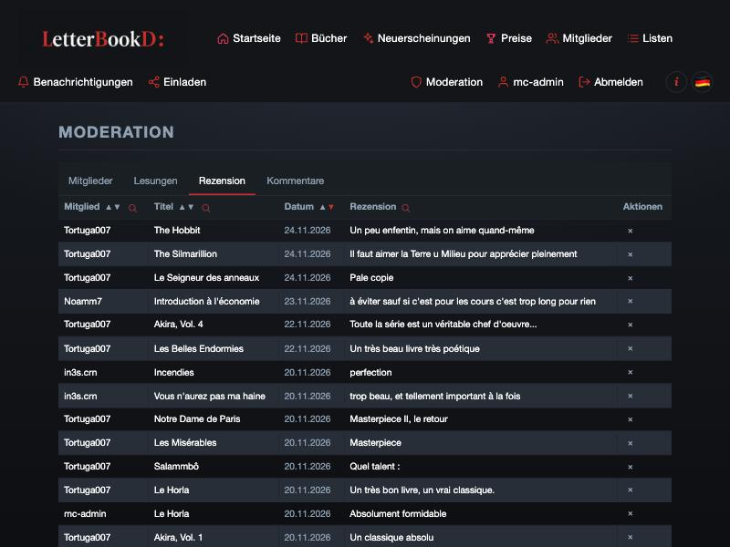

Moderation — Rezensionen Nur Admin
Wozu es dient: Alle im Club geschriebenen Rezensionen mit einem Textauszug. Ermöglicht Admins, eine unangemessene Rezension schnell zu löschen, ohne den Lesevorgang selbst anzutasten.

Ablauf
Tabelle: Mitglied (Verfasser der Rezension), Titel (betreffendes Buch), Datum (Datum der Rezension), Rezension (Textauszug) und Aktionen (Kreuz zum Löschen). Die Spalte Rezension ist sortierbar und per Text filterbar, nützlich, um nach einem Stichwort zu suchen, das eine Meldung ausgelöst hat.
Das Löschen einer Rezension entfernt nur den Text, behält aber den Lesevorgang (Note und Status). So bleibt die Sternenbewertung des Mitglieds im Durchschnitt erhalten.
Aktionsketten
Jede Zeile beschreibt einen Auslöser in der Oberfläche, das sich öffnende Modal/Formular und den erzielten Effekt.
| Auslöser | Modal / Felder | Effekt |
|---|---|---|
| Sortier-/Filtersymbole (Lupe in der Spalte Rezension) | — | Standardsortierung; Textfilter auf den Inhalt der Rezension. |
| Kreuz-Schaltfläche (×) in einer Zeile | Bestätigendes POST-Formular. | Löscht NUR den Text der Rezension. Die Bewertung bleibt, der Lesevorgang bleibt; die angehängten Kommentare bleiben, verlieren aber ihren Kontext. |